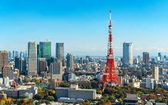
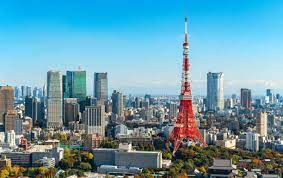

Tokyo
Tokio se identifica como el centro político, económico y cultural de Japón y, en base a la subdivisión administrativa del territorio, se divide en 23 distritos que incluyen 26 ciudades, 5 ciudadelas y 8 aldeas.
Tokio se identifica como el centro político, económico y cultural de Japón y, en base a la subdivisión administrativa del territorio, se divide en 23 distritos que incluyen 26 ciudades, 5 ciudadelas y 8 aldeas.
